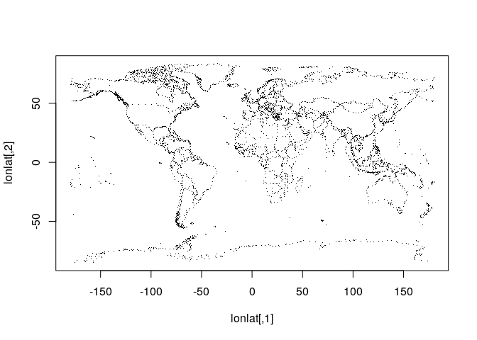
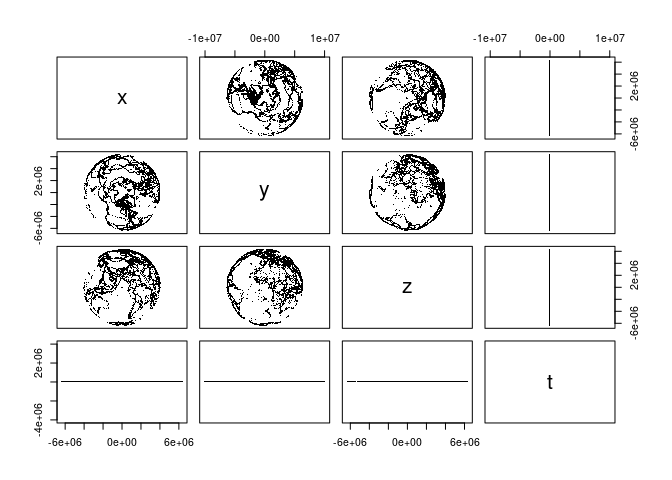

no PROJ available 👍
no PROJ available 👍  PROJ.4 in system, no function 👍
PROJ.4 in system, no function 👍  PROJ 5 in system, no function 👍
PROJ 5 in system, no function 👍  PROJ version 6, full function 🚀
PROJ version 6, full function 🚀  PROJ version 7, full function 🤸
PROJ version 7, full function 🤸
The goal of PROJ is to provide generic coordinate system transformations in R. The functional requirement is for the system library PROJ >= 6. This is same goal as the reproj package, but provided for later versions of the underlying library. Reproj currently uses PROJ 4 or 5 via the proj4 package, so PROJ augments that coverage for the more modern library versions.
I need basic coordinate transformations for matrices or data frames with efficient vectors of coordinate fields. Constantly unpacking and packing basic data from formats is labourious, error-prone, and brittle. Transforming spatial data coordinates is a basic task.
PROJ is strictly for version 6.0.0 or higher of the PROJ library. The intention is that this package will be used for when that version is available, and this package can be compiled and installed even when it cannot do anything. For older versions of PROJ (5, and 4) we can use the proj4 package.
Because we are version 6 or above only, there is no forward/inverse transformation, only integrated source/target idioms. This is the same approach taken by the reproj package- the source must be provided as well as the target. When a data set has an in-built CRS projection recorded, then methods can be written for that use-case with that format.
We can use “auth:code” forms, PROJ.4 strings, full WKT2, or the name of a CRS as found in the PROJ database, e.g “WGS84”, “NAD27”, etc. Full details are provided in the PROJ documentation.
Things to be aware of
Note that for PROJ5 (and lower) this package is non-functional (can use proj4). The testing here on Travis ensures that the package installs successfully for various versions of PROJ, although underlying functionality is disabled for 4 and 5 (and for no PROJ).
- Input can be a data frame or a matrix, but internally input is assumed to be x, y, z, and time. So the output is always a 4-column matrix.
- You can’t use strings like “+init=epsg:4326” any more, it must be “epsg:4326”.
- You should know what your target projection is, and also what your source projection is. This is your responsibility.
Personally, I need this low-level package in order to develop other projects. I don’t care about the big snafu regarding changes in version 6 and whatever, we should have low-level tools and then we can code at the R level to sort stuff out. A text-handler for various versions and validations of CRS representations would be good, for instance we can just gsub out “+init=” for those sorts of things, and being able to write “WGS84” as a valid source or target is a massive bonus.
WAAT
This package strips code out of the development version of proj4, with attribution to the author.
- Why not proj4? It’s not maintained in a way that works for me.
- Why not sf? It brings a lot of baggage, and can’t do geocentric transformations.
- Why not rgdal? Still baggage, no transformations possible without special data formats.
- Why not lgeom? That package is format-specific, and does not work with generic data coordinates so is unsuitable for many straightforward and efficient data-handling schemes.
- Why not mapproj? This is unusable for real-world projections in my experience, it seems to be written for some basic graphics cases.
- Why not reproj? This is an extension for reproj, to bridge it from PROJ version 4 and 5, to version 6 and 7 and beyond.
Notes
THINGS TO WORRY ABOUT for development here:
- the name of this package
- t and z
- threading, see the PJ_CONTEXT
- coordinate order
- the zero value after transformation, it comes out like -3.19835e-15 (do we just zapsmall()?)
https://proj.org/development/quickstart.html
Example
Minimal code example, two lon-lat coordinates to LAEA, and back.
library(PROJ)
lon <- c(0, 147)
lat <- c(0, -42)
dst <- "+proj=laea +datum=WGS84 +lon_0=147 +lat_0=-42"
src <- "+proj=longlat +datum=WGS84"
## forward transformation
(xy <- proj_trans_generic( cbind(lon, lat), dst, source = src))
#> $x_
#> [1] -8013029 0
#>
#> $y_
#> [1] -8225762 0
#>
#> $z_
#> [1] 0 0
#>
#> $t_
#> numeric(0)
## inverse transformation
proj_trans_generic(cbind(xy$x_, xy$y_), src, source = dst)
#> $x_
#> [1] 0 147
#>
#> $y_
#> [1] -3.194835e-15 -4.200000e+01
#>
#> $z_
#> [1] 0 0
#>
#> $t_
#> numeric(0)
## note that NAs propagate in the usual way
lon <- c(0, NA, 147)
lat <- c(NA, 0, -42)A more realistic example with coastline map data.
library(PROJ)
w <- PROJ::xymap
lon <- na.omit(w[,1])
lat <- na.omit(w[,2])
dst <- "+proj=laea +datum=WGS84 +lon_0=147 +lat_0=-42"
xyzt <- proj_trans_generic(cbind(lon, lat), dst, source = "epsg:4326", z_ = 0)
plot(xyzt$x_, xyzt$y_, pch = ".")
lonlat <- proj_trans_generic(xyzt, src, source = dst)
plot(lonlat$x_, lonlat$y_, pch = ".")
Convert projection strings
We can generate PROJ or WKT2 strings.
cat(wkt2 <- proj_create("EPSG:4326"))
#> GEOGCRS["WGS 84",
#> DATUM["World Geodetic System 1984",
#> ELLIPSOID["WGS 84",6378137,298.257223563,
#> LENGTHUNIT["metre",1]]],
#> PRIMEM["Greenwich",0,
#> ANGLEUNIT["degree",0.0174532925199433]],
#> CS[ellipsoidal,2],
#> AXIS["geodetic latitude (Lat)",north,
#> ORDER[1],
#> ANGLEUNIT["degree",0.0174532925199433]],
#> AXIS["geodetic longitude (Lon)",east,
#> ORDER[2],
#> ANGLEUNIT["degree",0.0174532925199433]],
#> USAGE[
#> SCOPE["unknown"],
#> AREA["World"],
#> BBOX[-90,-180,90,180]],
#> ID["EPSG",4326]]
cat(proj_create("+proj=etmerc +lat_0=38 +lon_0=125 +ellps=bessel"))
#> CONVERSION["PROJ-based coordinate operation",
#> METHOD["PROJ-based operation method: +proj=etmerc +lat_0=38 +lon_0=125 +ellps=bessel"]]
proj_create(wkt2, format = 1L)
#> [1] "+proj=longlat +datum=WGS84 +no_defs +type=crs"Speed comparisons
library(reproj)
library(rgdal)
library(lwgeom)
library(sf)
#> Linking to GEOS 3.8.0, GDAL 3.0.4, PROJ 7.0.0
#>
#> Attaching package: 'sf'
#> The following object is masked from 'package:lwgeom':
#>
#> st_make_valid
lon <- w[,1]
lat <- w[,2]
lon <- rep(lon, 25)
lat <- rep(lat, 25)
ll <- cbind(lon, lat)
z <- rep(0, length(lon))
llproj <- "+proj=longlat +datum=WGS84"
xyz <- cbind(lon, lat, z)
xyzt <- cbind(lon, lat, z, 0)
# stll <- sf::st_crs(llproj)
# sfx <- sf::st_sfc(sf::st_multipoint(ll), crs = stll)
rbenchmark::benchmark(
PROJ = proj_trans_generic(ll, target = dst, source = llproj, z_ = z),
reproj = reproj(ll, target = dst, source = llproj),
rgdal = project(ll, dst),
sf_project = sf_project(llproj, dst, ll),
# lwgeom = st_transform_proj(sfx, dst),
# sf = st_transform(sfx, dst),
replications = 100) %>%
dplyr::arrange(elapsed) %>% dplyr::select(test, elapsed, replications)
#> test elapsed replications
#> 1 rgdal 5.209 100
#> 2 PROJ 7.572 100
#> 3 sf_project 7.647 100
#> 4 reproj 8.425 100The speed is not exactly stunning, but with PROJ we can also do 3D transformations and that’s good enough for me. I think it will be faster with the underlying API function proj_trans_array(), instead of proj_trans_generic(), but I don’t really know.
A geocentric example, suitable for plotting in rgl and used extensively with quadmesh, silicate, and anglr.
xyzt <- proj_trans_generic(cbind(w[,1], w[,2]), target = "+proj=geocent +datum=WGS84", source = "EPSG:4326")
plot(as.data.frame(xyzt[1:3]), pch = ".", asp = 1)
Geocentric transformations aren’t used in R much, but some examples are found in the quadmesh and anglr packages.
Why PROJ?
The reproj package wraps the very efficient proj4::ptransform() function for general coordinate system transformations. Several package now use reproj for its consistency (no format or plumbing issues) and efficiency (directly transforming bulk coordinates). The proj4 package used by reproj doesn’t provide the modern features of PROJ (PROJ.4), has not been updated on CRAN since 2012 and has an uncertain future. So reproj requires a new wrapper around PROJ (PROJ.4) itself.
Since the 1990s PROJ.4 has been the name of the common standard library for general coordinate system transformations (for geospatial). That 1994 release has been modernized and now has versions PROJ 5 and PROJ 6. There’s a bit of traction in the name PROJ.4, so it has stuck
I’ll use “PROJ (PROJ.4)” to distinguish the system library from this package.
There are a few links to the PROJ (PROJ.4) library in R.
-
rgdal Provides low level
project(matrix, inv = TRUE/FALSE), and engine behindsp::spTransform(). -
proj4 Provides low level
project()andptransform. -
sf Provides low level
sf::sf_project()transformation of matrices. Provides high levelst_transform()which works via the GDAL library and its own internal version of PROJ (PROJ.4). The high level function converts coordinates in list heirarchies of matrices into WKB for the transformations. -
lwgeom Provides high level
st_transform_proj()also converts coordinates in list hierarchies of matrices into WKB, but internally uses the PROJ (PROJ.4) library directly.
(The mapproj package uses all its own internal code).
Packages sf, rgdal and proj4 provide raw access to coordinate transformations for R vectors. sf::sf_project() is the winner, but is embedded in a package that does many other things. Rgdal only has project forward and project inverse and always works in degrees proj4 has the more general ptransform() but requires manual conversion of degree values into radians. PROJ (PROJ.4) internally works only with radians.
The rgdal function project() won’t transform with a third Z coordinate. The sf functions do work with geocentric coords.
The packages rgdal, sf, lwgeom are now compatible with PROJ 5 (and 6) and don’t need any further attention in this regard. They work fine within their chosen context.
Are there any other wrappers around PROJ (PROJ.4) on CRAN or Bioconductor, or in the works? Let me know!
Please note that the PROJ project is released with a Contributor Code of Conduct. By contributing to this project, you agree to abide by its terms.